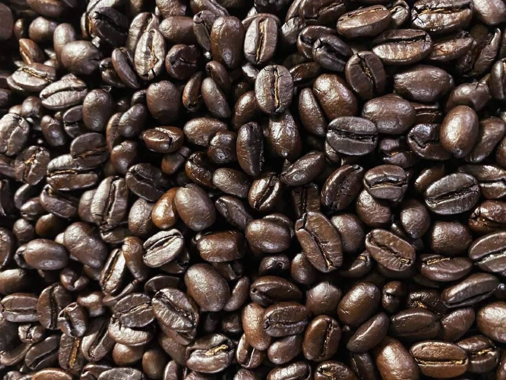
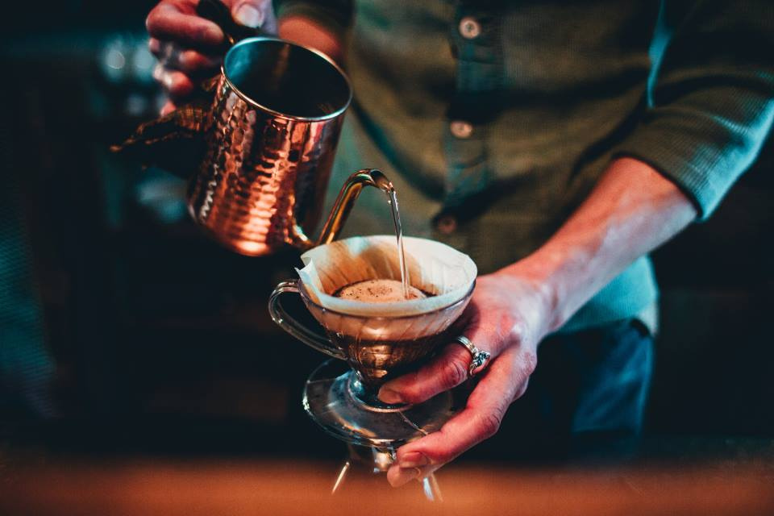
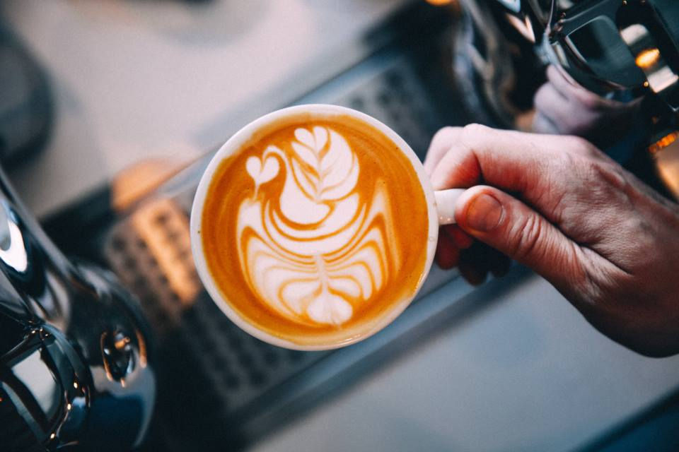
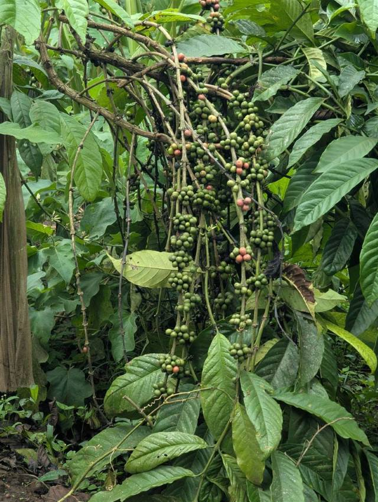
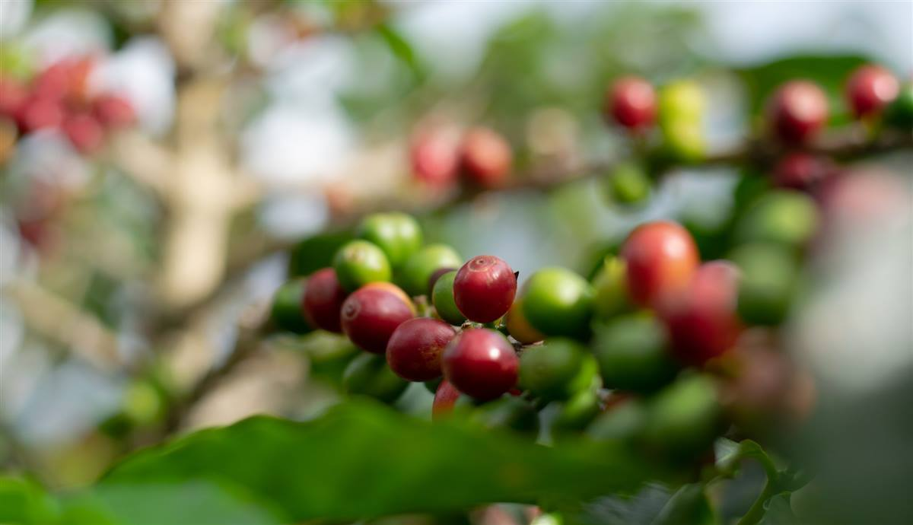
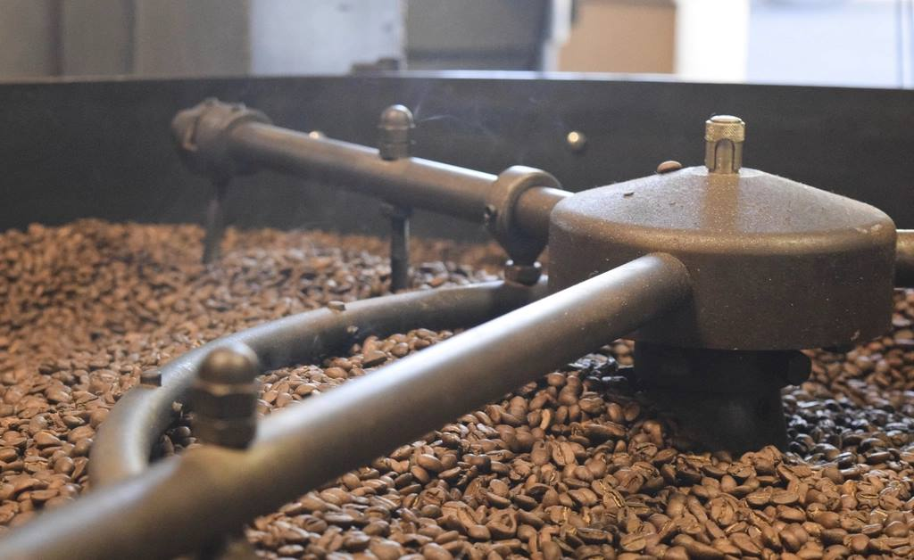
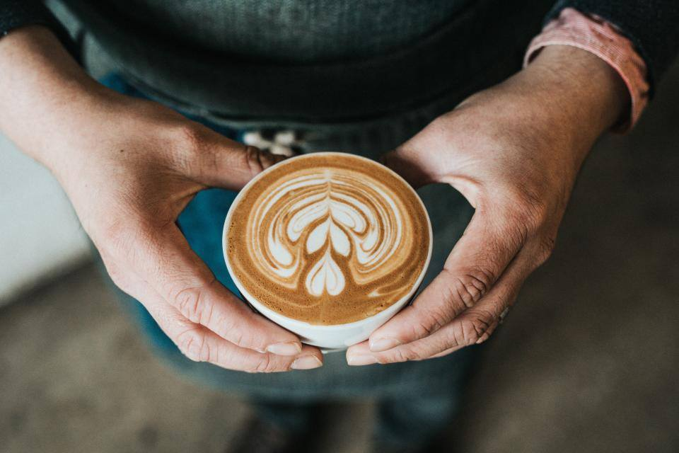

Café de especialidad
Todo empieza con un café.
Dos cafés colombianos, cinco métodos manuales y un espresso para cada gusto. Aquí te contamos de dónde viene y cómo lo preparamos.
Nuestros cafés
Dos cafés, dos maneras de tomarlo.
Uno para el espresso y las bebidas con leche; otro para los métodos manuales. Los dos son colombianos y cada uno tiene su ficha.
¿No sabes cuál pedir? Pide un espresso con el café de la casa y un V60 con el de origen, y pruébalos lado a lado.
Métodos manuales
Cinco métodos, cinco tazas distintas.
El mismo café sabe distinto según cómo se prepare. Cada método sale para 2 tazas: para compartir o para repetir.
¿Cuerpo o acidez?
Así se ubican los cinco métodos. Si te gusta el café con cuerpo, mira a la derecha; si lo prefieres frutal y brillante, mira hacia arriba.

Así se hace un V60
Agua a 92 °C, café recién molido y tres minutos.
- Se moja el filtro con agua caliente para quitarle el sabor a papel.
- Se echa un poco de agua sobre el café y se espera 30 segundos: el café se infla y suelta el gas.
- Se sirve el resto en círculos, despacio, hasta completar la jarra.
Espresso y con leche
Un espresso, seis maneras de pedirlo.
Todo empieza con un shot de espresso. Lo que cambia es cuánta agua, leche o espuma lleva encima. Así se arma cada taza.




Del grano a la taza
Antes de llegar a tu mesa, un café pasa por muchas manos.
-
Cultivo
En Colombia, el café crece en las montañas, entre 1.200 y 2.200 metros de altura. Una planta tarda unos tres años en dar su primera cosecha.
-
Cosecha
Las cerezas no maduran todas al tiempo, así que se recogen a mano, una por una, cuando están rojas.
-
Beneficio
Se separa el grano de la pulpa. Según el proceso (lavado, honey o natural), la taza sale más limpia, más dulce o más frutal.
-
Secado
El grano se seca al sol o en secadores hasta bajar su humedad, para que se conserve. Después se trilla: se le quita la cascarilla y queda el café verde.
-
Tueste
En la tostadora, el grano verde cambia de color, de aroma y de sabor. Un tueste medio saca el dulzor sin tapar el origen.
-
Molienda
Lo ideal es molerlo justo antes de prepararlo: molido, pierde aroma rápido. Cada método pide su propia molienda.
-
Preparación
Agua, temperatura y tiempo. Con el mismo café, un V60 y una prensa francesa dan dos tazas muy distintas.
-
La taza
Llega a tu mesa. Pruébalo primero sin azúcar: puede que no la necesites.
Cómo probarlo
Cinco cosas para fijarte en tu taza.
No hace falta ser catador. Con estas cinco pistas ya puedes decir qué café te gusta más y por qué.
Aroma
Acerca la taza antes del primer sorbo. ¿Huele a chocolate, a fruta, a panela?
Acidez
La chispa que se siente a los lados de la lengua, como en una fruta. No es amargor: es brillo.
Cuerpo
El peso del café en la boca. Ligero como un té o denso como una leche entera.
Dulzor
Un buen café tiene dulzor propio, sin azúcar. Pruébalo primero solo.
Final
Lo que queda después de tragar. Si es largo y agradable, es buena señal.
Colombia en la taza
Cada región sabe distinto.
El suelo, la altura y la lluvia cambian el sabor. Estas son algunas de las regiones cafeteras más conocidas del país.
Huila
Dulce y equilibrado, con acidez brillante y notas de fruta y panela. Es de las regiones con más premios de calidad del país.
Nariño
Cafés de mucha altura, cerca de la línea ecuatorial: acidez alta, cuerpo ligero y notas cítricas y florales.
Cauca
Entre volcanes y montañas: tazas dulces y florales, de acidez media a alta.
Tolima
Tazas balanceadas, con notas de frutos rojos, caramelo y chocolate.
Antioquia
Nuestra tierra. Cafés de cuerpo medio y dulces, con notas de chocolate y nuez.
Sierra Nevada
Café de sombra en la Sierra Nevada de Santa Marta: suave, de cuerpo medio, con notas de nuez y cacao.
Glosario
Palabras de barra.
Lo que significan las palabras que vas a ver en la carta y en las fichas de nuestros cafés.
- Café de especialidad
- Café que saca 80 puntos o más sobre 100 en la evaluación de la SCA (Specialty Coffee Association): sin defectos y con sabores propios de su origen.
- Espresso
- Café concentrado que se hace pasando agua caliente a presión por café molido fino, en unos 25 a 30 segundos.
- Crema
- La capa dorada que cubre un espresso recién hecho. Se forma con los aceites y el gas del café.
- Tueste
- Hasta dónde se tuesta el grano. Un tueste claro deja ver la fruta; uno oscuro, el cacao y el amargor.
- Molienda
- Qué tan fino se muele el café. Fina para el espresso, media fina para el V60, gruesa para la prensa francesa.
- Lavado
- Proceso en el que se quita la pulpa y se lava el grano antes de secarlo. Da tazas limpias y de acidez clara.
- Honey
- Proceso en el que el grano se seca con parte del mucílago, la capa dulce de la cereza. Da tazas más dulces y con más cuerpo.
- Natural
- Proceso en el que la cereza se seca entera, con el grano adentro. Da tazas frutales e intensas.
- Variedad
- El tipo de planta de café, como Caturra, Castillo o Geisha. Cada una cambia el sabor de la taza.
- m s. n. m.
- Metros sobre el nivel del mar. Entre más alto se cultiva, más despacio madura la cereza y más acidez y dulzor tiene el café.
- Cold brew
- Café preparado con agua fría durante muchas horas. Sale suave, dulce y con poca acidez.
- Extracción
- Lo que el agua saca del café molido. Si es poca, la taza sale ácida y aguada; si es demasiada, sale amarga.

¿Qué café te preparamos hoy?
Mira la carta completa o escríbenos: te ayudamos a escoger.